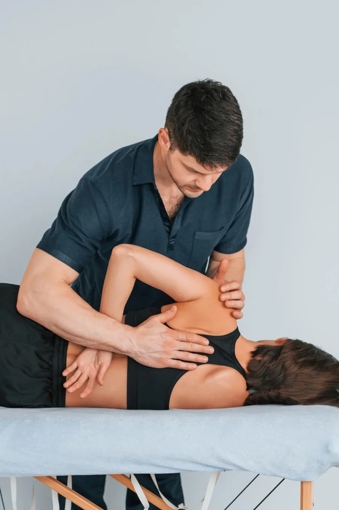
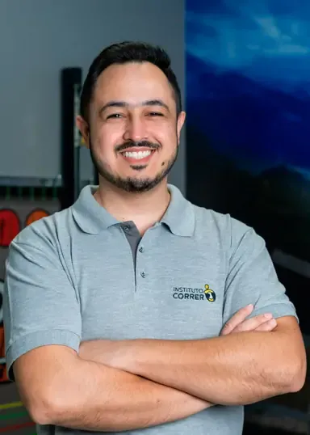
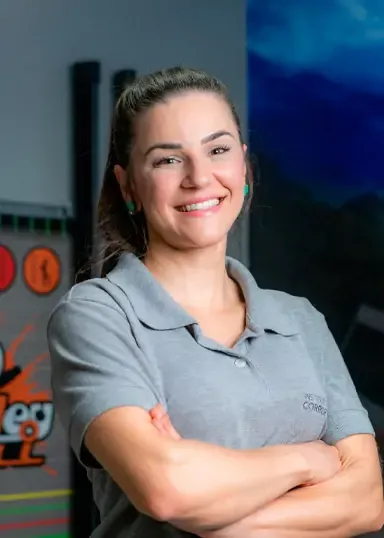

Mobilidade articular restaurada
A articulação volta a se mover no arco que deveria, e para de sobrecarregar as vizinhas.
Ajustes articulares precisos precedidos de avaliação física detalhada em Blumenau. Indicado para dor nas costas, cervical, ciática, hérnia de disco e tensão postural.
Atendimento seg. a sex., das 7h às 12h e das 13h às 20h


Toque na opção abaixo para iniciar a conversa no WhatsApp já com o seu caso preenchido. Nossa equipe orienta você na hora.
A quiropraxia atua sobre articulações que perderam mobilidade e passaram a sobrecarregar as vizinhas. Restaurar esse movimento devolve função à região e reduz o estímulo doloroso.
Antes de qualquer ajuste, existe uma avaliação detalhada: conversa sobre a sua história, exame físico e exame funcional. É ela que determina o que ajustar, com que técnica e com que intensidade.
No Instituto Correr, quando necessário, integramos o ajuste quiroprático com fisioterapia e fortalecimento para que o alívio se sustente no longo prazo.
Nada de pacote pronto antes de examinar você. Na primeira consulta entregamos clareza sobre o seu quadro:
A articulação volta a se mover no arco que deveria, e para de sobrecarregar as vizinhas.
Abordagem conservadora e não invasiva, frequentemente com melhora perceptível já no início.
Reorganização da mecânica da coluna, com reflexo direto na forma como você se sustenta.
O ajuste abre a janela de alívio; o exercício consolida o ganho para evitar recaída.
Você será atendido por especialistas com registro ativo, em estrutura completa com consultórios e estúdio próprio de pilates na região central de Blumenau.

Escolha o melhor período para você e clique em continuar: abrimos o WhatsApp já com os seus dados preenchidos para agilizar o horário.
Consultórios equipados e estúdio completo na Rua Frederico Busch Júnior, 101.
Avaliação detalhada e conduta individualizada para resolver a causa da dor, não apenas o sintoma.
Conhecer fisioterapiaEstúdio com aparelhos e acessórios, com séries desenhadas a partir da sua avaliação de movimento.
Conhecer pilatesTécnica que desativa pontos-gatilho e libera a fáscia muscular, reduzindo tensão e dor.
Conhecer liberação miofascialMobilizações, manipulações e técnicas de tecidos moles aplicadas com raciocínio clínico.
Conhecer terapias manuaisChame nossa equipe no WhatsApp, conte o que está sentindo e veja os horários disponíveis ainda para esta semana em Blumenau.
Seg. a sex., das 7h às 12h e das 13h às 20h · Rua Frederico Busch Júnior, 101, Ed. Oswaldo Cruz, Blumenau/SC